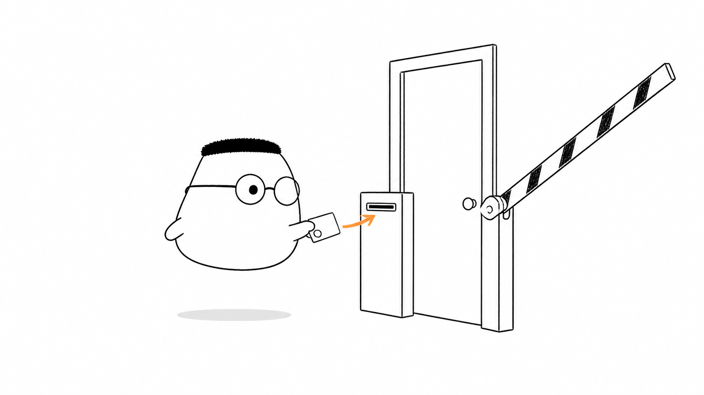
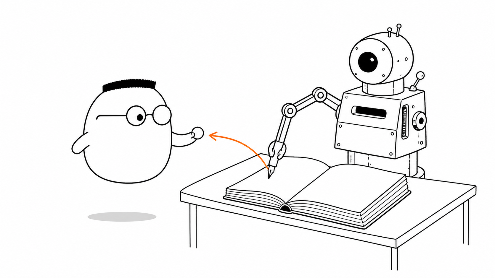
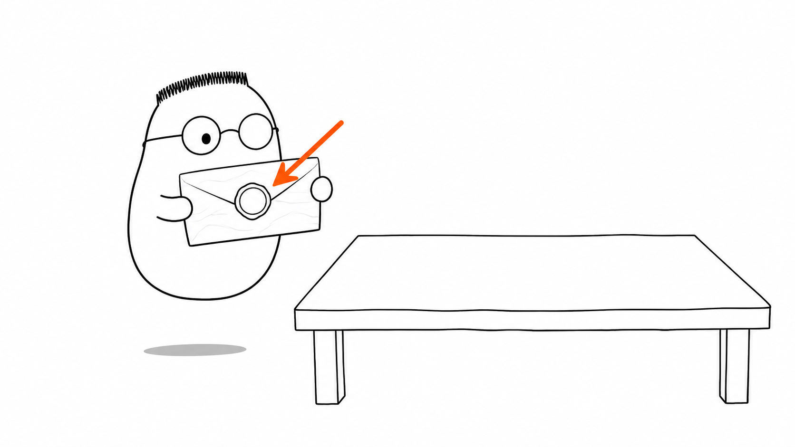
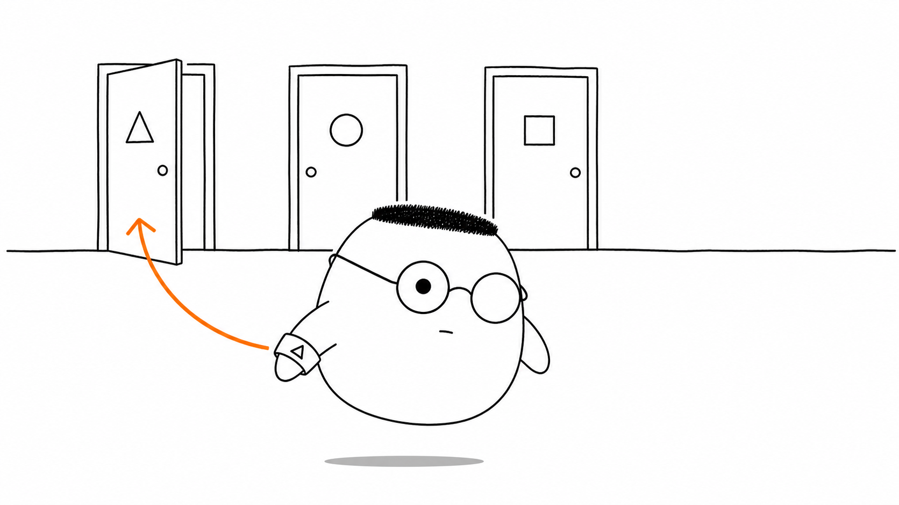

Masalah sehari-hari
Pintu gedung tidak lagi terbuka untuk semua orang. Kuka perlu membuktikan siapa dirinya lewat autentikasi, lalu gedung memeriksa ruangan mana yang boleh ia masuki lewat otorisasi.
Analogi Kuka
Kuka tiba di gedung kantor dari bab sebelumnya. Kali ini, pintu-pintunya terkunci dan ada mesin pembaca di dekat pintu.
Kuka menempelkan kartu identitas ke mesin. Setelah kartu sah, ia memakai gelang bertanda. Motif gelang menunjukkan pintu mana yang boleh ia masuki.
Peta sederhananya
Kartu identitas menjawab siapa Kuka. Mesin pemeriksa membaca kartu itu. Buku tamu adalah session. Kartu bersegel membawa identitas sendiri sebagai JWT. Gelang bermotif menunjukkan peran dalam RBAC dan menentukan pintu yang terbuka.
Ilustrasi

Urutannya dimulai dari identitas. Mesin memeriksa kartu, lalu gelang membantu gedung menentukan pintu yang sesuai.
Penjelasan konsep
Autentikasi memeriksa identitas. Otorisasi memeriksa izin. Jika identitas tidak ada, server dapat mengirim 401. Jika identitas sah tetapi izin kurang, server dapat mengirim 403.
Tiga komponen inti bekerja bersama. Kartu membawa identitas, mesin pemeriksa memvalidasi bukti, dan catatan akses mencatat siapa yang boleh membuka apa.
Dengan session, server menyimpan penanda di buku tamu. Kuka cukup membawa penanda itu pada request berikutnya, lalu server mencari catatan yang cocok.

Dengan JWT, identitas dan klaim ditulis pada kartu bersegel. Server tidak perlu mencari catatan tamu. Server cukup memeriksa tanda tangan dan masa berlaku kartu.

Cookie
Cookie adalah saku kecil di browser untuk menyimpan penanda atau kartu. Browser dapat mengirim isinya kembali pada request ke gedung yang sesuai.
Autentikasi ber-state
Autentikasi ber-state memakai cara buku tamu. Server menyimpan catatan session, sedangkan tamu cukup membawa penanda.
Autentikasi stateless
Autentikasi stateless memakai cara kartu bersegel. Server tidak menyimpan catatan session karena informasi ada di token.
Ber-state vs stateless: memilih
Buku tamu mudah dicoret saat tamu diusir. Kartu bersegel praktis saat request melewati banyak gedung.
Autentikasi API key
API key adalah kartu khusus mesin, bukan kartu tamu. Client mengirimkannya agar server mengenali client yang memanggil API.
Memilih jenis auth
Pilih buku tamu atau kartu bersegel sesuai kebutuhan gedung, cara mencabut akses, dan jumlah service yang harus bekerja bersama.
Setelah identitas sah, gedung masih perlu memeriksa peran. RBAC memberi gelang bermotif kepada setiap peran. Motif segitiga membuka pintu segitiga, sedangkan motif lingkaran membuka pintu lingkaran.

Diagram alur
Request tanpa identitas berhenti dengan 401. Request dengan kartu diperiksa mesin, gelang dibaca, pintu terbuka, lalu respons 200 keluar.
Contoh mini
Percobaan 1 GET /ruang tanpa kartu 401 Unauthorized Percobaan 2 GET /ruang Authorization: Bearer kartu-kuka 200 OK
Seperti kartu pos, request pertama datang tanpa kartu dan ditolak. Request berikutnya membawa kartu identitas, sehingga pintu memberi respons 200.
Ringkasan
- Autentikasi menjawab siapa yang datang.
- Otorisasi menentukan ruangan yang boleh dimasuki.
- Session menyimpan penanda di server seperti buku tamu.
- JWT membawa identitas di kartu bersegel.
- RBAC memakai peran untuk menentukan pintu.
401berarti identitas belum sah, sedangkan403berarti izin tidak cukup.
Pertanyaan pemahaman
- Apa beda autentikasi dan otorisasi?
- Kenapa session butuh buku tamu di server, dan JWT tidak?
- Setelah identitasmu sah, apa yang menentukan ruangan mana yang boleh kamu masuki?
Mau lebih dalam
Versi teknis membahas cara autentikasi dan otorisasi berkembang dari kartu sederhana menjadi sistem dengan banyak jenis identitas dan peran.
Disinggung sekilas
- Sejarah autentikasi
- Masalah delegasi
- OAuth 1.0
- OAuth 2.0
- OpenID Connect
- Pesan error & serangan timing